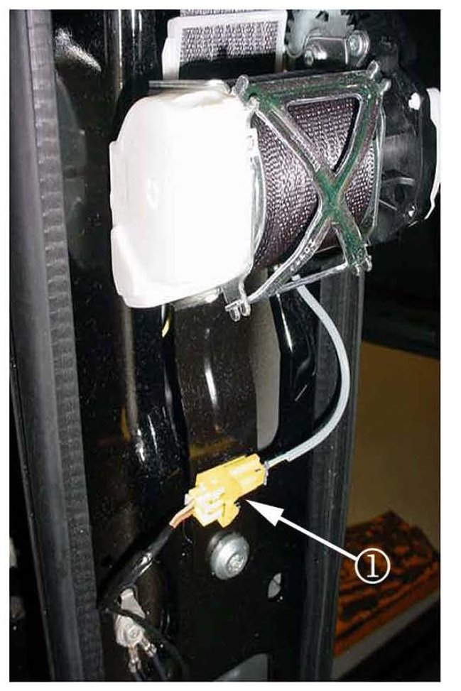
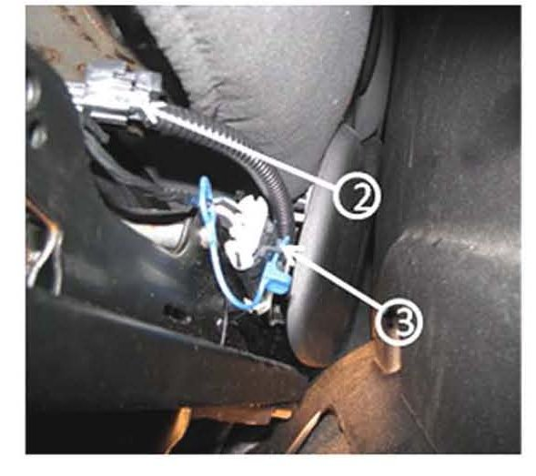
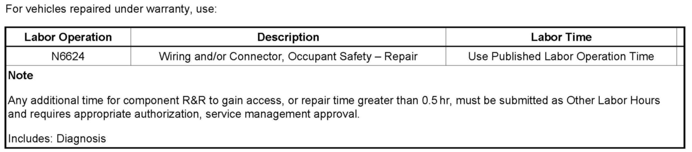

Restraints - Air Bag Lamp ON/Multiple DTC's Set
TECHNICALBulletin No.: 08-09-41-010
Date: October 29, 2008
Subject:
Airbag Readiness Light On, DTC B0015, B0022, B0071, B0072 or B0073 Set (Perform Repair as Outlined)
Models:
2007-2009 Cadillac Escalade, Escalade ESV, Escalade EXT
2007-2009 Chevrolet Avalanche, Silverado, Suburban, Tahoe
2007-2009 GMC Sierra, Sierra Denali, Yukon, Yukon Denali, Yukon XL, Yukon Denali XL
Condition
Some customers may comment that the airbag readiness light is on.
A scan tool may reveal one or more of the following DTCs set: B0015, B0022, B0071, B0072 or B0073.
Cause
One possible reason is the improper connection or high resistance at the front seat belt retractor and buckle connectors.
Correction
For DTCs B0015 and B0022

Before replacing the front seat belt retractor assembly, remove the components necessary to gain access to the connector (1) and follow the procedure outlined below.
1. Inspect the connector for proper connection. Perform a tug test to determine if the connector was properly locked.
2. Disconnect the connector and inspect the terminals for signs of corrosion or other deposits. Repair as necessary and use dielectric grease, GM P/N 12345579 (in Canada, use P/N 10953481) on the connector pins.
3. Reconnect the connector and install CPA, GM P/N 12052834.
4. Clear the DTC and confirm the code does not reset.
For DTCs B0071, B0072 and B0073

Before replacing the front seat buckle, remove the components necessary to gain access to the connectors (2, 3) and follow the procedure outlined below.
1. Inspect the connector for proper connection. Perform a tug test to determine if the connector was properly locked.
2. Disconnect the connector and inspect the terminals for signs of corrosion or other deposits. Repair as necessary and use dielectric grease, GM P/N 12345579 (in Canada, use P/N 10953481) on the connector pins.
3. Reconnect the connector and CPA.
4. Clear the DTC and confirm the code does not reset.
Warranty Information

For vehicles repaired under warranty, use the table.

Disclaimer